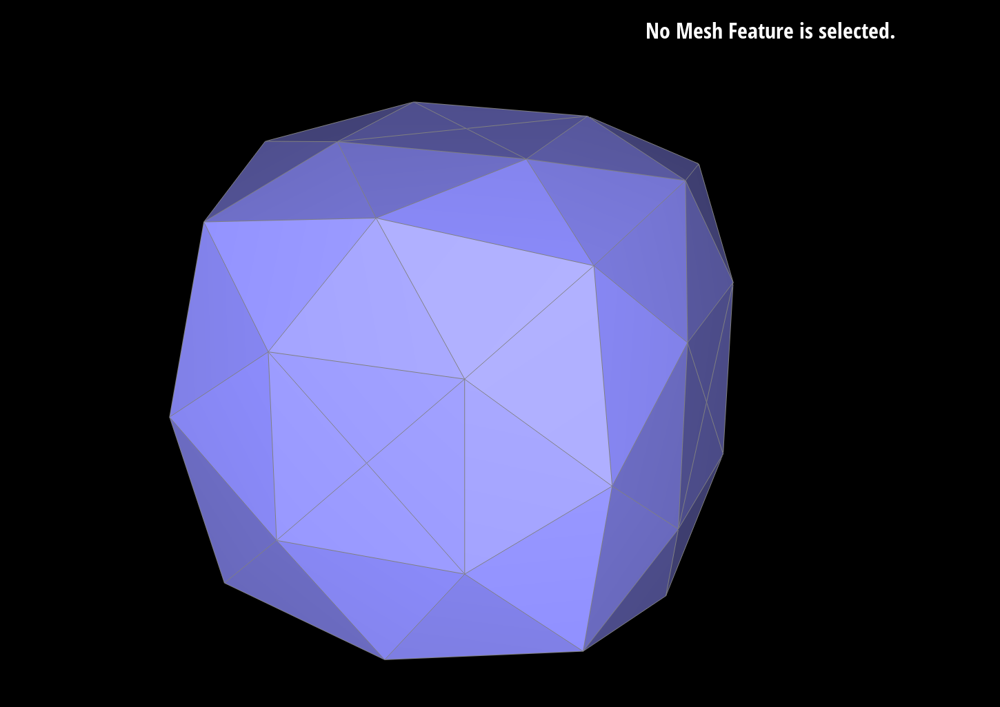

Project 2 here
Overview
Give a high-level overview of what you have implemented in this assignment. Think about what you have built as a
whole. Share your thoughts on what interesting things you have learned from completing this assignment.
Part 1
- Briefly explain de Casteljau's algorithm and how you implemented it in order to evaluate Bezier curves.
- Take a look at the provided
.bzc files and create your own Bezier curve with 6
control points of your choosing. Use this Bezier curve for your screenshots below.
- Show screenshots of each step / level of the evaluation from the original control points down to the final
evaluated point. Press E to step through. Toggle C to show the completed Bezier curve
as well.
- Show a screenshot of a slightly different Bezier curve by moving the original control points around and
modifying the parameter t via mouse scrolling.
The de Casteljau's algorithm works by iteratively creating points evaluated for a given value t by using linear interpolation. This function is called recursively until there is one point left, which is part of the Bezier curve. Evaluting at all t's will reveal the full Bezier curve.
Here is my own curve with 6 control points, with a progression of visualizations.
And, here are screenshots with a slightly different Bezier curve and with different parameter t values via mouse scrolling.
Part 2
- Briefly explain how de Casteljau algorithm extends to Bezier surfaces and how you implemented it in order to
evaluate Bezier surfaces.
- Show a screenshot of
bez/teapot.bez (not .dae) evaluated by your
implementation.
The de Casteljau algorithm for Bezier surfaces is very similar, but each dimension is computed separately. First, you evaluate the point at u for all vectors of points along the v direction. Then, you run de Casteljau algorithm by evaluating the newly computed vector of points now for the v value. This results in a point evaluated at location u, v. The following is an image of this:
Part 3
- Briefly explain how you implemented the area-weighted vertex normals.
- Show screenshots of
dae/teapot.dae (not .bez) comparing teapot
shading with and without vertex normals. Use Q to toggle default flat shading and Phong shading.*
Briefly explain how you implemented the area-weighted vertex normals.
- Show screenshots of
dae/teapot.dae (not .bez) comparing teapot
shading with and without vertex normals. Use Q to toggle default flat shading and Phong shading.
I implemented area-weighted vertex normals by traversing around vertices. I use calls to twin(), next(), vertex(), and the position value to get vertex positions for each triangle around a given vertex. I compute the normalize normal vector and the area of each triangle, and I store them in in vectors. Then, I add the do an area-weighted sum to create a final normal vector that is used. I also handle boundary edges in my code but I don't think it's relevant for this assignment.
Here, I show the teapot with flat shading (left) and with Phong shading using the computer vertices (right):

Part 4
- Briefly explain how you implemented the edge flip operation and describe any interesting implementation /
debugging tricks you have used.
- Show screenshots of a mesh before and after some edge flips.
- Write about your eventful debugging journey, if you have experienced one.
I implemented the edge flip operation by following the instructions in the homework. They idea was listing out all the halfedges and then updating them and all their pointers according to the new edge flip. It was helpful to write out the vertex names a, b, c, and d and directional edges like "ab" when refering to the halfedge going from vertex a to vertex b. This made the code easier to write and keep track of what is going on.
See the following images for some illustrations of edge flips.

Part 5
- Briefly explain how you implemented the edge split operation and describe any interesting implementation /
debugging tricks you have used.
- Show screenshots of a mesh before and after some edge splits.
- Show screenshots of a mesh before and after a combination of both edge splits and edge flips.
- Write about your eventful debugging journey, if you have experienced one.
- If you have implemented support for boundary edges, show screenshots of your implementation properly
handling split operations on boundary edges.
The edge split operation is implemented similar to part 5 for edge flipping but now with more operations because the process is more complicated. Here, we need to add one vertex, add 3 edges (6 halfedges), and 2 new faces. I try to use nice convensions when writing the code to make it readable, although this function is quite tedious in general to write.
Here are pictures before and after some edge splits, and then we also add edge flips followed by more edge splits. Follow the images sequentially to see how the order of operations applied.

Part 6
- Briefly explain how you implemented the loop subdivision and describe any interesting implementation /
debugging tricks you have used.
- Take some notes, as well as some screenshots, of your observations on how meshes behave after loop
subdivision. What happens to sharp corners and edges? Can you reduce this effect by pre-splitting some
edges?
- Load
dae/cube.dae. Perform several iterations of loop subdivision on the cube. Notice that the
cube becomes slightly asymmetric after repeated subdivisions. Can you pre-process the cube with edge flips
and splits so that the cube subdivides symmetrically? Document these effects and explain why they occur.
Also explain how your pre-processing helps alleviate the effects.
- If you have implemented any extra credit extensions, explain what you did and document how they work with
screenshots.
I implemented the loop subdivision by following the steps in the instructions. First, I went through all the vertices and their neighbors to compute the new positions for the vertices that were not being added. Then, I went through every edge and computed the new position of a vertex for when the edge is split. Then, I perform the splits and modified the splitEdge function to set new vertices and new edges to isNew = true. With the bookkeeping in place, we then flip edges where applicable if one vertex is new and the other is not. Finally, we update the positions for all the vertices.
Sharp corners and edges become quite smooth after multiple iterations. Here you can see a sequence of subdivisions, starting from none, left to right. You could reduce this affect by updating each face at a time but this would require extra knowledge and bookkeeping for the given objects.

You could preprocess the cube by making sure that the degree of each vertex is the same and symmetric. You can see what happens when you first add the splits, as follows:

Part 7 (Optional, Possible Extra Credit)
- Save your best polygon mesh as
partsevenmodel.dae in your docs folder and show us
a screenshot of the mesh in your write-up.
- Include a series of screenshots showing your original mesh and your mesh after one and two rounds of
subdivision. If you have used custom shaders, include screenshots of your mesh with those shaders applied as
well.
- Describe what you have done to enhance your mesh beyond the simple humanoid mesh described in the tutorial.
My questions
Does the ordering of the u, then v matter for Bezier curves? I.e., can you do v, then u, and have it be equivalent?
Part 4: Why would one triangle look much darker than the others in a "degenerate case" and it still be okay/correct?